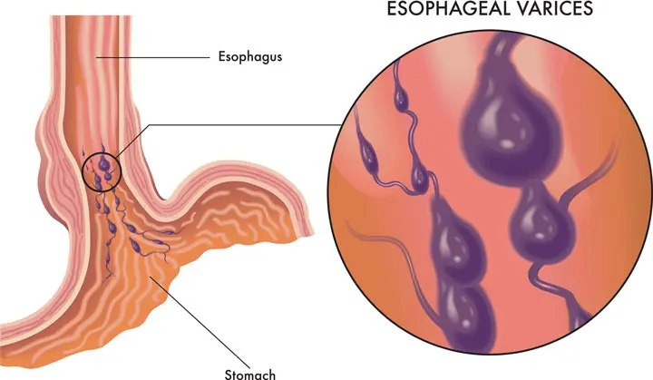
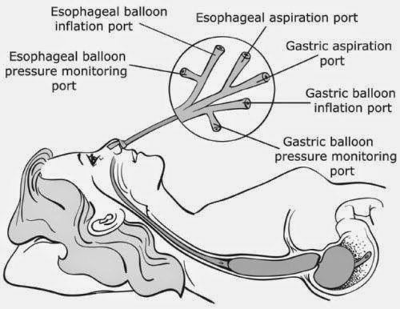
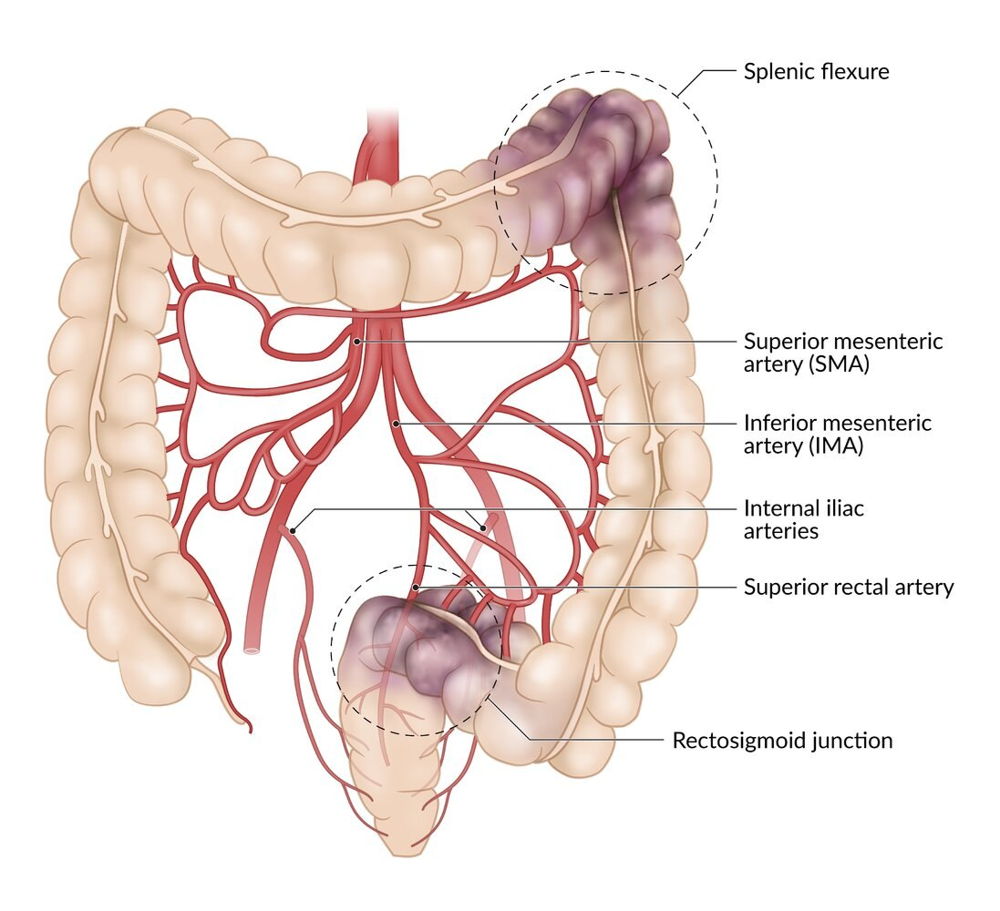
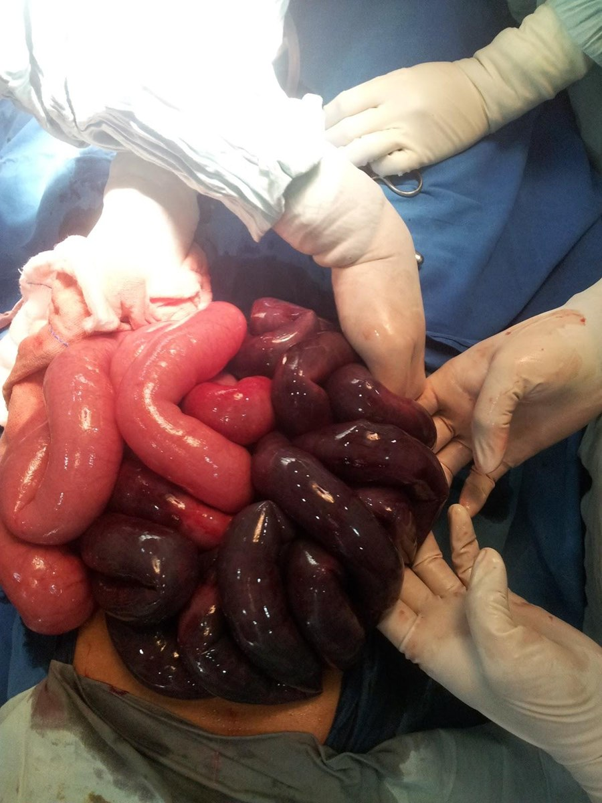
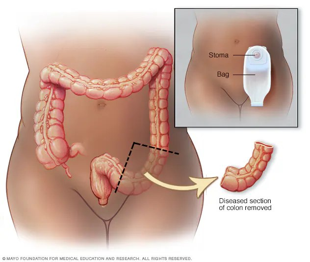
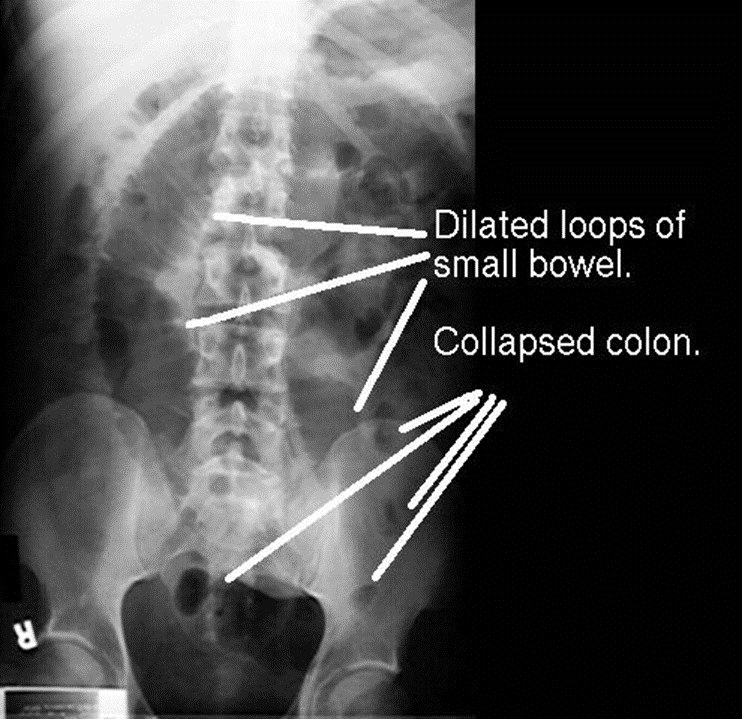
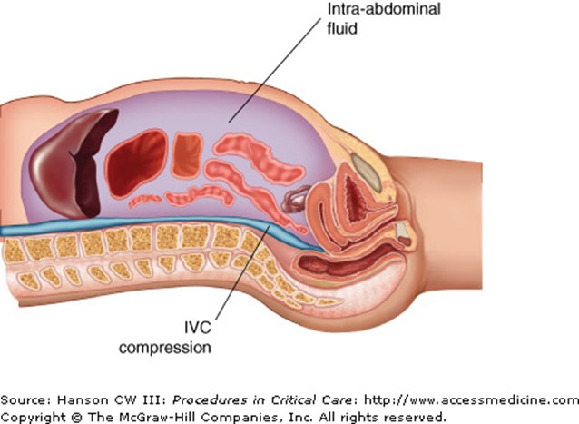
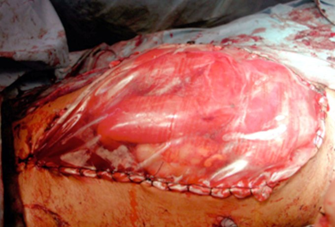

Day 3 · Topic 1
GI Critical Care Issues
Things to Bring Forward
Earlier Content This Topic Builds On
- GI anatomy and physiology: understanding what is going on leads the interventions when these issues occur in a critical care patient.
- IBS, inflammatory bowel disease, GI bleeds and ulcers, peptic ulcer disease: the bowel diseases.
- Chronic pancreatitis: applied to acute pancreatitis, the kind that lands a patient in the ICU.
- Liver failure: liver disease and liver failure, and how their complications land a patient in the ICU. Portal hypertension and its complications.
- How age affects the GI system: the changes that come with getting older, such as taste, smell and appetite.
GI System: Things to Consider
| Consideration | What to Know |
|---|---|
| Neural and hormonal factors | Parasympathetic, cholinergic stimulation drives GI secretion and motility, and stimulates the pancreas and gallbladder. Sight and smell stimulate gastric secretions. Easily influenced by problems elsewhere in the body. |
| Largest endocrine organ | Secretes hormones and enzymes to digest food and absorb nutrients and vitamins. Also affects other body systems. |
| Blood supply | The largest share of cardiac output, about 33%, across the intestines, liver, pancreas and gallbladder. |
| Age | The older the patient, the more susceptible the GI system is to damage. |
| Assessment | Two big indicators: distension and bowel sounds. Bowel sounds also show perfusion to the gut. Hypoactive or absent with no meds or anesthesia to explain it: a perfusion problem, usually with distension and rigidity. |
How age affects the GI system is taught in the GI review
GI Bleeding
| Source | What to Know |
|---|---|
| Peptic ulcer disease | A history of a peptic or duodenal ulcer puts the patient at very high risk of another, especially on an anticoagulant. |
| Stress-related mucosal bleeding (stress ulcers) | From homeostatic stress: chronic disease or a very acutely ill state. Critically ill patients are at high risk. |
| Mallory-Weiss tear | Arterial hemorrhage from longitudinal tears in the gastroesophageal mucosa. After long, aggressive or projectile vomiting. |
| Esophageal or gastric varices | A critical care emergency. See Variceal Bleeding below. |
Peptic ulcer disease and the upper GI bleed are taught in the GI review
Who Is at Risk for a GI Bleed
- Critically ill: high risk, for stress ulcers.
- Anticoagulated: a heparin drip, long-term warfarin or apixaban, heparin or enoxaparin injections. Vastly increases the risk, on top of the critical illness.
- History to assess: a blood coagulopathy or known bleeding issue, anticoagulants at home, liver disease, cancer and chemo drugs, drug and alcohol use.
Prophylaxis in Critical Care
- Why: to prevent stress ulcers in high-risk critically ill patients.
- H2 receptor antagonists are used a lot. Pantoprazole is a PPI, and is also used.
- Conflicting evidence on PPIs in the critically ill. Most of the time, pantoprazole is given.
Assessing for a GI Bleed
| Assess | What to Look For |
|---|---|
| Bowel sounds | In a severe bleed: hyperactive during the bleed, from the bowel's sensitivity to blood. Hypoactive or absent if the bowel begins dying from lack of perfusion. |
| Stool and emesis | Bright red: actively bleeding. Dark or black (melena): an older bleed. |
| Secretions and drainage | Dark output from an NG tube to low wall suction: an old upper GI bleed. Red drainage anywhere, wounds included. |
| Labs | Trend the H&H. |
| Color | Getting paler. Seems simple, but incredibly indicative. |
| Vital signs | A GI bleed causes a fluid volume deficit. Tachycardia is the first sign, as compensation: the heart rate creeps into the 90s and low 100s. Then a dropping blood pressure, a rising respiratory rate, and a dropping SpO2 with no oxygenation problem to explain it. |
| Urine output | Drops with the fluid volume deficit, as the kidneys lose perfusion. |
Management of a Severe GI Bleed
Hemodynamically unstable: the primary goal is to stabilize the vital signs.
| Intervention | What to Know |
|---|---|
| Continuous vital signs |
|
| Fluid resuscitation |
|
| Blood transfusions |
|
| Vasopressors |
|
| Labs |
|
| Gastric lavage |
|
| Medications |
|
Clotting factors lost in a big bleed are taught in Hematologic Issues in Critical Care
Vasopressors after fluid resuscitation are taught in Shock, Sepsis, MODS
Acute Versus Chronic GI Bleed
Acute GI Bleed: Symptoms
- Weakness, shortness of breath, angina, syncope.
- Hypotension, tachycardia.
- Anemia.
- May also show fatigue, weakness and pallor, but these usually come with a chronic bleed.
Chronic GI Bleed: Symptoms
- Fatigue, weakness, pale appearance.
- Syncopal events.
- Anemia.
- An unexplained increase in BUN or K+ can mean blood is being metabolized in the GI tract.
GI Bleed Interventions
Most GI bleeds resolve on their own, through platelet plugs. An intervention is needed when a bleed cannot be controlled: very severe, on anticoagulants, or a third or fourth bleeding ulcer.
Endoscopy
- Used for: the treatment of choice for an upper GI bleed, in the stomach or duodenum.
- When: once hemodynamically stable, or within 24 hours if the patient cannot be stabilized. Often at the bedside.
- Procedure: sclerotherapy injects the bleeding ulcer with a necrotizing therapy. Endoclipping clips it with hemoclips, and decreases rebleeding.
- Nurse: maintain the airway and monitor the vital signs.
Surgical Therapy
- Used for: usually massive rebleeding, such as a dropping H&H and bright red blood the day after an endoclip.
- Procedure: in the OR. May need a gastric resection, to remove the areas of the peptic ulcers.
- Nurse: fluid and electrolyte balance, drains, and pain, a big risk with any GI surgery.
Variceal Bleeding
Usually from end-stage liver disease or acute liver failure. Portal hypertension causes the varices.
Priorities in a Variceal Bleed
- Maintain the airway. Esophageal and gastric bleeding can really impact it.
- Hemodynamic stability. Usually multiple transfusions and IV fluid resuscitation.
- Gastric lavage, to identify what is going on.
- Diagnose through endoscopy, at the bedside, to see what the varices are doing.
Treating a Variceal Bleed
| Treatment | What to Know |
|---|---|
| Octreotide IV or somatostatin | Stop the bleeding. Decrease splanchnic blood flow and reduce portal pressure. Octreotide: a continuous IV drip, very safe, often given to stabilize before definitive treatment. Sometimes given for an upper GI bleed too. |
| Vasopressin | Lowers portal pressure through vasoconstriction of the splanchnic arteriolar bed, so the bleeding slows. A drip, especially in the unit. |
| Endoscopy | Usually needed eventually. Sclerotherapy right into the varices, or band ligation. |
| TIPS (transjugular intrahepatic portosystemic shunt) | Non-surgical. For recurrent bleeding after sclerotherapy. A shunt between the hepatic and portal veins lowers the portal hypertension that causes the varices. Not a permanent fix: used in the interim, and some patients keep bleeding. |
| Esophagogastric tamponade (Sengstaken-Blakemore tube) | Presses on the varices: holding pressure on a wound, internally. Needs the right traction, tight against the esophageal or gastric wall. Other tubes exist. |
| Portocaval shunt | Surgery. Diverts blood around the blocked portal system. Decreases bleeding risk, but does not improve survival. |


Ischemic Bowel Disease
A vascular condition: the bowel wall does not receive oxygenated blood, and that part of the bowel dies. In the small intestine it is mesenteric ischemia. In the colon it is ischemic colitis.

Causes of Ischemic Bowel Disease
- Low blood pressure: the gut and skin take the hit first. Watch the bowel closely after a significant hypoperfusion event.
- A blood clot or blockage in an artery.
- A twisted or enlarged bowel.
- Lupus and sickle cell anemia.
Risk Factors for Ischemic Bowel Disease
- Atherosclerosis: fatty plaque can build up in the gut's arteries.
- Age over 50.
- Smoking: damages the lining of the vessels.
- Heart failure and AFib: cardiac output issues.
- Medications, mainly hormonal birth control: clots in the bowel.
- Blood clotting disorders.
- Cocaine and methamphetamine use.
- High-dose vasopressors, especially norepinephrine: clamp off the gut's arterial supply and shift it to vital areas. On prolonged high doses, monitor for ischemic bowel disease.
Diagnosed by colonoscopy, or a barium contrast study or CT with contrast. Not seen on an X-ray: the problem is perfusion and arterial flow.
Signs and Symptoms of Ischemic Bowel Disease
- Abdominal pain, especially after eating: the gut cannot work. Pain at baseline too, as the gut dies.
- Frequent, urgent need to have a bowel movement.
- Loose stools or diarrhea.
- Nausea and vomiting.
- Bloody stool with dark red clots: depends on the cause. Bloody stool points first to a lower GI bleed, with ischemic bowel second on the list.
- Fever: the inflammatory response to dead gut.
- Labs: increasing lactate, from the acidotic state ischemia or infarction causes. WBC altered, usually elevated.
| Treatment | What to Know |
|---|---|
| Bowel rest | Not eating. Drinking depends on the severity. |
| Fluid resuscitation | A lot of fluid shifting: often intravascularly depleted. |
| Surgery | Removes the blockage or the infarcted area, cutting well into the healthy pink bowel, because the infarction can spread. Often ends in a colostomy, temporary or permanent, depending on how much gut is removed. |
| Treat the cause | A clotting disorder, hormonal birth control, atherosclerosis, AFib or heart failure, a perfusion event. |


Bowel Obstruction
Small Bowel Obstruction (SBO)
- What it is: occlusion of the intestinal lumen. Mechanical: something physically blocks it, such as a tumor, adhesion or hernia. Functional: no peristalsis, a paralytic ileus. See below.
- Diagnosis: an X-ray (KUB) or a CT of the abdomen and pelvis. The X-ray shows dilated loops of small bowel and a collapsed colon. Partial or complete: complete is more severe.
- Treatment: usually surgery to repair it. Before surgery, if not hemodynamically stable: NPO, fluid resuscitation, an NG tube. Electrolytes. Meds such as metoclopramide. Avoid opioids and anesthesia when possible, especially in a functional obstruction.
Large Bowel Obstruction
- What it is: usually a neoplasm, such as colon or rectal cancer. Also diverticulitis, strictures (as in ulcerative colitis), a severe fecal impaction.
- Diagnosis: the same as an SBO.
- Treatment: the same as an SBO, depending on the cause: removing the neoplasm, fluid resuscitation, perhaps bowel rest.
Signs of a Small Bowel Obstruction
- Hallmark sign: abdominal distension. Can become a tympanic abdomen.
- Cramping periumbilical pain in waves, with periods of comfort.
- Tachycardia.
- Cannot tolerate PO intake.
- Large-volume bilious vomiting.
- High-pitched, tinkling bowel sounds.
- Cannot pass flatus or gas. Constipation.
- Electrolyte imbalances: the small bowel absorbs nutrients and vitamins.

Paralytic Ileus
What Paralytic Ileus Is
- A functional obstruction: intestinal peristalsis is lost, with no mechanical obstruction.
- Common in the ICU, usually from opioids and anesthesia. Bowel regimens such as senna and docusate are given freely in the ICU to prevent it.
- Same symptoms as a mechanical SBO, except absent to hypoactive bowel sounds: no peristalsis is occurring.
- Other causes: muscle or nerve damage after surgery, higher risk after GI surgery than after cardiac or respiratory surgery. Intestinal ischemia or shock, a very high risk with ischemic bowel disease. A GI infection or peritonitis. Whenever the gut is sick, the risk is higher.
Treating Paralytic Ileus
- Pain management: it can be very painful. Acetaminophen or NSAIDs in place of a higher-dose opioid, if appropriate.
- Motility: moving increases peristalsis, though these patients often don't feel like moving. Avoid opioids and other meds that slow GI motility when possible.
- Bowel rest, IV fluids, electrolyte management.
- NG decompression.
- Aggressive bowel regimen: a lot of enemas, to get the gut to wake up.
Abdominal Compartment Syndrome
Intra-Abdominal Hypertension
Fluid builds up in the abdominal compartment and presses on the abdominal organs. The intra-abdominal pressure (IAP) rises.
Organ Ischemia
IAP 16 to 20 mmHg. Impaired blood flow to multiple organs.
Multiple Organ Dysfunction
IAP above 20 mmHg. Tissue damage and organ failure.
Causes of Abdominal Compartment Syndrome
- Massive fluid volume resuscitation: one of the big ones. Trauma patients who lost a lot of blood, as in a motor vehicle crash, stabbing or gunshot wound. Shock.
- Third spacing: severe albumin deficiency, as in liver disease. Severe cardiac output issues, as in heart failure.
- Abdominal surgery and trauma: a leak, or bleeding into the abdominal compartment.
- A severe ileus or bowel obstruction, and ischemic bowel disease especially.
- A ruptured aortic aneurysm.
- Pancreatitis: third spacing, and trouble keeping fluid in the vascular space.
Acute pancreatitis is taught in Acute Pancreatitis
Recognizing Abdominal Compartment Syndrome
- Hugely distended, possibly rigid: hard to the touch from the fluid, not hard like peritonitis.
- Measured as bladder pressure: a catheter in the bladder gives the IAP. Measurements taken directly in the abdomen exist, but are not used often.
| Management | Why |
|---|---|
| Supine, HOB flat | Completely flat. Raising the head, even reverse Trendelenburg, increases abdominal pressure. One of the rare times a patient stays flat, along with some neuro injuries. |
| Sedation and paralytics | Usually needed. Very painful, and pain or fighting the ventilator increases abdominal pressure. Usually ventilated, on a lot of IV pain meds. |
| Surgical decompression | Usually, when severe. The abdomen is left open for a while, then closed slowly over time. |
| Antibiotics | An open abdomen risks peritonitis and sepsis. Bacteria translocating out of the gut put an already very ill patient at very high risk of septic shock. |

